Marking the times through a century of lenses, passing on imaging aesthetics through craft and light
July 28, 2025, Mainland China. 2025 marks the 100th anniversary of the Leica I camera. Since the start of this year, Leica has held events in many countries under the theme “Leica Centenary: A Century's Witness.” For the centenary of the Leica I, Shanghai hosts the themed exhibition “A Century's Witness: When Leica Met China.” The one-month show is held at the Shanghai Postal Museum. It brings together rare antique cameras and lenses, design sketches, precision materials and parts, and LFI magazine covers, plus rich works by Chinese and foreign masters made over nearly a century.
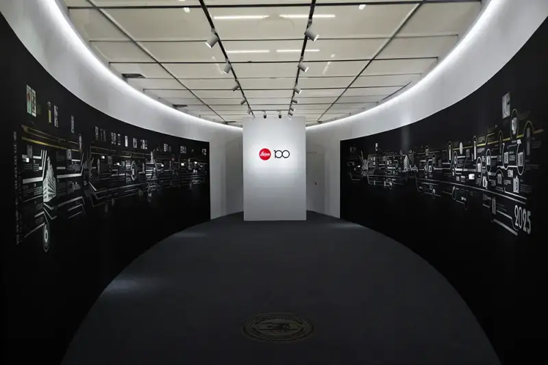
Leica's centenary is not only a brand milestone but a mirror of the development of photographic art. Since its founding, Leica has pushed the bounds of imaging and linked past and future through photography. In a century, Leica has made countless classic cameras and witnessed many great moments in human history. From war-zone cameras to artists' tools, Leica has stayed a faithful record of the times. Now, this century of art and technology, through constant innovation, keeps leading the future of imaging.
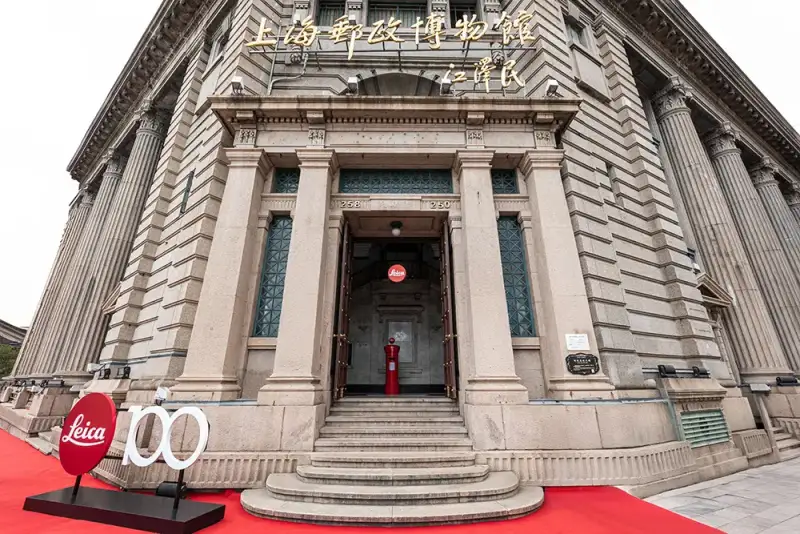
The choice of venue has meaning. The General Post Office building that holds the Shanghai Postal Museum was built in 1924, the same era as the Leica camera. The building has weathered a century and carries the history of China's post. Like the moments a Leica lens records, it speaks to the timeless theme of tradition and innovation.
The show has four zones. The Treasures zone holds rare antique cameras, lenses, and limited-edition models from Leica's century. In the Craft Workshop zone, camera parts, lens cross-sections, and design sketches show the precision and process behind Leica products. The LFI Archive presents selected LFI covers from the first issue to today, so visitors can take in Leica's long history and rich imaging culture. In the Century of Imaging zone, visitors see works by Leica masters past and present, and read the century-long story of Leica and China.
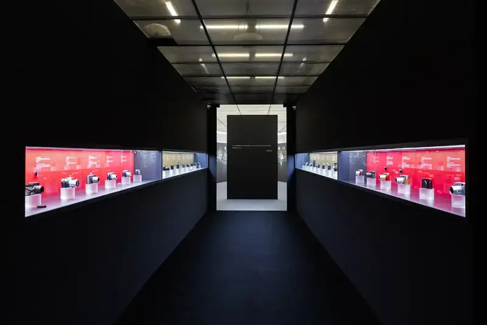
Treasures
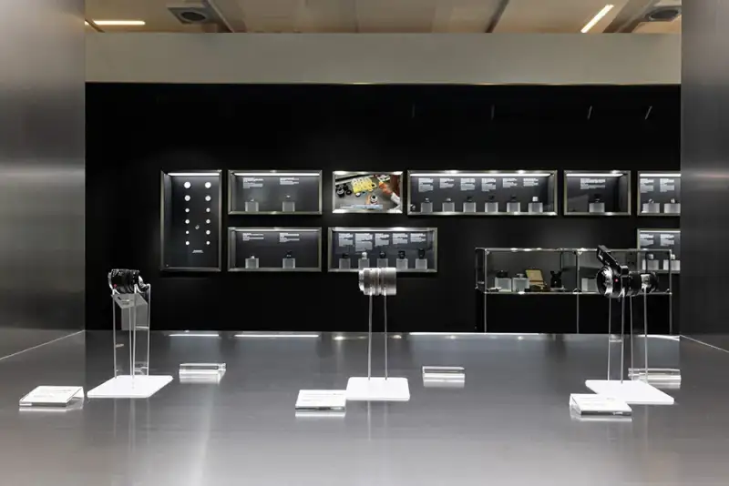
Craft Workshop
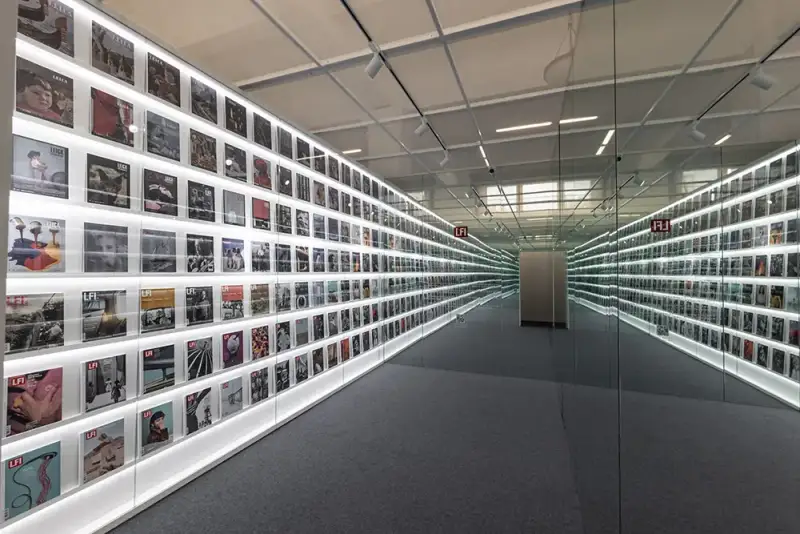
LFI Archive
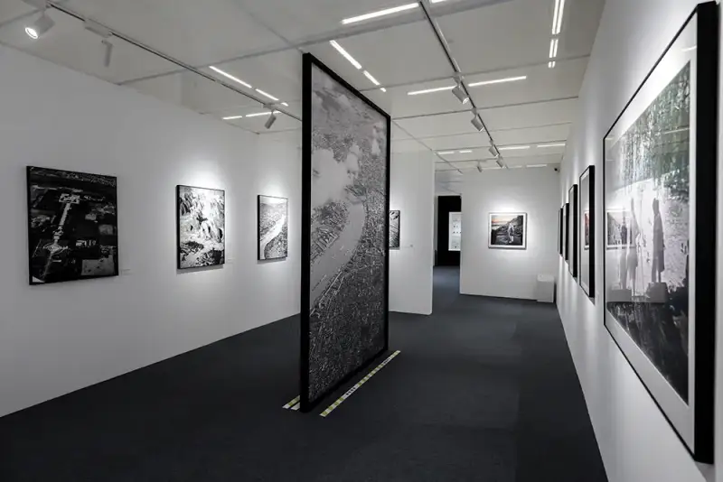
Century of Imaging
The Century of Imaging zone is curated by Gu Zheng, photography critic, professor at Fudan University Journalism School, and noted curator. As he writes in the foreword, the show is not just a photo feast but a visual dialogue across time, view, and identity. Works range from early-1900s Leica photographer Jin Shisheng, to masters Wu Jialin, Pulitzer winner Liu Heung Shing, Leica Hall of Fame photographer Steve McCurry, and Japanese national photographer Ueda Yoshihiko. It also shows avant-garde works by Li Qi, Li Xiaoliang, Xu Chuang, and Zhong Ling, new voices that open new possibilities for Leica today. In addition, private photos by Olympic champion Chen Yiwen and stars Luo Yunxi, Tan Songyun, Xiao Zhan, and Zhang Yadong are shown to the public for the first time, adding many views on Leica's art.
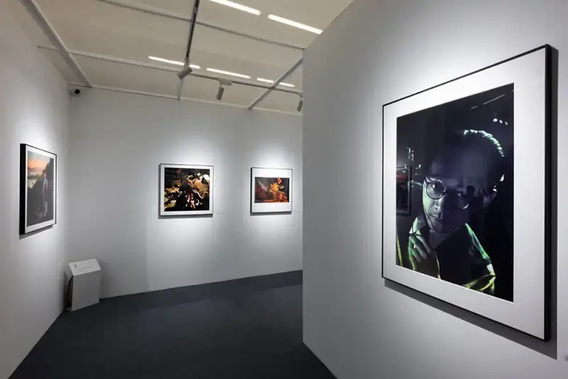
On the evening of July 25, the Leica centenary opening ceremony was held at the Postal Museum, bringing a photographic art event to Shanghai.
Siegmund Dukek, Managing Director of Leica Camera Greater China, said in his opening speech: 100 years ago, through the brave decision of Ernst Leitz II, the first Leica camera, the Leica I, came to market. It marked a turning point in camera making and the start of a new era in photography. Leica keeps shaping the history of camera making and has become an iconic brand for photographers and photography fans.
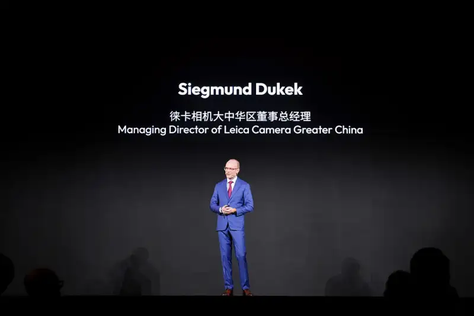
Several senior guests from Leica's German headquarters also attended and gave speeches:
Dr. Andreas Kaufmann, chairman of the supervisory board: Celebrating Leica's centenary is not just a look back. It means we build the future on deep technical roots, from precision optics and mechanics to electronics, software, design, and a selected sales network. This bold idea, born in Wetzlar, has become a worldwide imaging revolution.
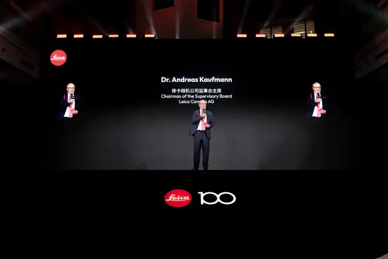
Karin Rehn-Kaufmann, international art director and chief representative of Leica Galleries: We are honored to work with Leica photographers in China over the long term. Their unique views and art keep bringing inspiration to the photo world. This celebration of passion and creativity gathers the love of Leica fans around the world for the power of imaging. The show at the Shanghai Postal Museum uses the Leica lens as a window and leads visitors on a moving journey through Chinese culture and visual history. These precious moments review a century of Leica imaging and look forward to a future built together through international exchange.
Matthias Harsch, CEO of Leica Camera: Leica has grown into a true brand giant. Built on cameras, it has also built smartphones, home cinema, watches, and eyeglass lenses. With sports optics, Asia is about a third of our global revenue, and China is our single most important market. This shows our future is global, and Asia will play a key part.
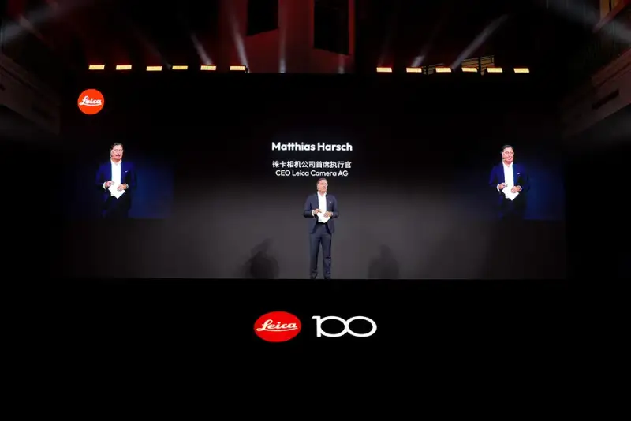
Then Dr. Andreas Kaufmann, Karin Rehn-Kaufmann, Maximilian Kaufmann (representative of the major shareholder), Matthias Harsch (CEO), and Siegmund Dukek (Managing Director, Greater China) joined on stage. They raised their Leica cameras and celebrated the moment with media, noted photographers, and guests.
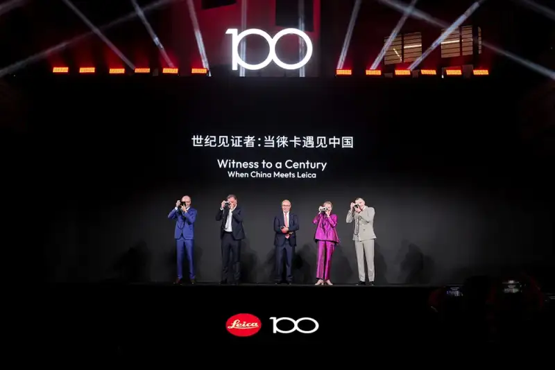
Left to right: Siegmund Dukek (Managing Director, Leica Camera Greater China), Matthias Harsch (CEO), Dr. Andreas Kaufmann (chairman of the supervisory board), Karin Rehn-Kaufmann (international art director), Maximilian Kaufmann (shareholder representative)
Afterward, Xu Bin of the Shanghai Postal Museum and Siegmund Dukek exchanged gifts. The gift, a symbol of the centenary pact, shows how two century-old brands share a quest for tradition and innovation.
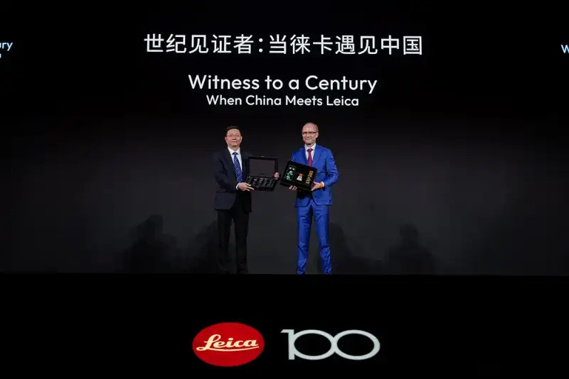
Left to right: Xu Bin (Shanghai Postal Museum), Siegmund Dukek (Managing Director, Leica Camera Greater China)
The limited-edition souvenir zone is built by Leica with Swiss modular furniture brand USM. A pixel-themed custom installation blends the order, precision, and design of both brands into an immersive, high-impact, forward-looking space.
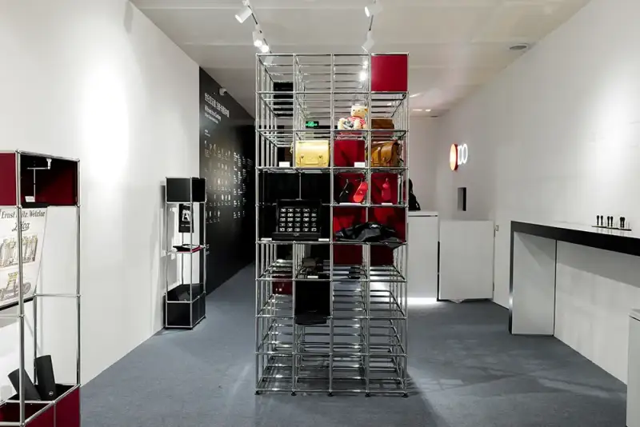
During the show, visitors can buy souvenirs made for the centenary and the custom display cabinets made with USM, see limited-edition cameras, and keep a special memory of the visit.
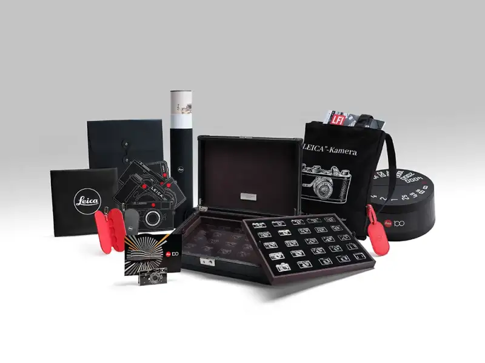
Besides the show, Leica held a Leica Fan Day on July 26 and 27, with noted photographers and product experts sharing their Leica stories. Fans took master classes, learned how Leica cameras began and evolved, and experienced a century of Leica photography culture.
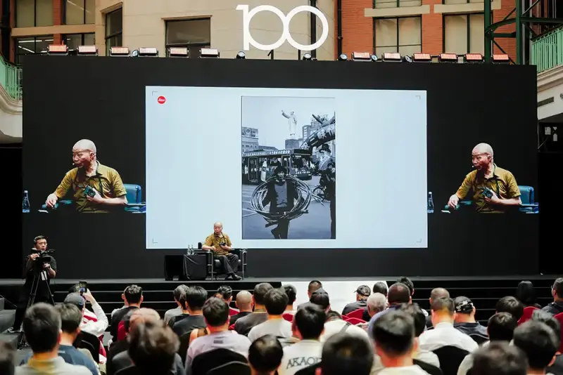
From now on, visitors can reserve free entry and sign up for events on the Leica World WeChat mini program.
Show info:
A Century's Witness: When Leica Met China
Open: July 26 to August 25, 2025, 10 am to 6 pm daily
Venue: Shanghai Postal Museum, 250 North Suzhou Road, Hongkou District
Leica Centenary: A Century's Witness
For Leica Camera AG, 2025 marks 100 years since the Leica I. In 1925, the Leica I first appeared at the Leipzig Spring Fair. It was the first Leica 35mm camera made in large numbers. Compact and portable, it created a new way to shoot and changed photography. Under the theme “Leica Centenary: A Century's Witness,” Leica will hold Leica I centenary events in Dubai, Milan, New York, Shanghai, and Tokyo, with rich cultural events and special-edition products all year. In June, the Leica headquarters in Wetzlar will hold a series of events to mark the centenary. Leica galleries worldwide will also hold major master exhibitions to look back on a century of light.
Leica Camera: walking with photography
Leica Camera AG makes high-end cameras, lenses, and sports optics, with over 150 years of history. As part of its growth, it has moved into mobile imaging (smartphones), high-quality eyeglass lenses, and watches, and holds a place in home cinema with its own projectors.
Leica Camera is based in Wetzlar, Germany, with another production site in Famalicao, Portugal. It has its own global sales network with over 120 Leica stores. The company has 2,400 employees and posted revenue of 554 million euros in fiscal 2023/24.
The Leica brand stands for quality, German craft, industrial design, and innovation. As part of its culture, Leica works to promote imaging culture. It runs about 30 Leica galleries worldwide, a Leica Academy, and international awards such as the Leica Hall of Fame Award and the Leica Oskar Barnack Award (LOBA).